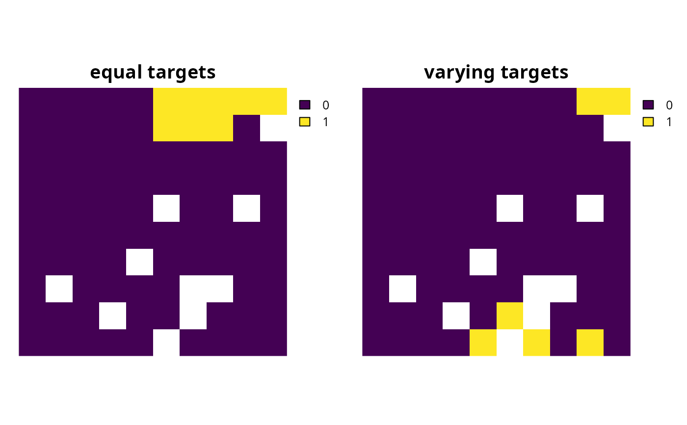
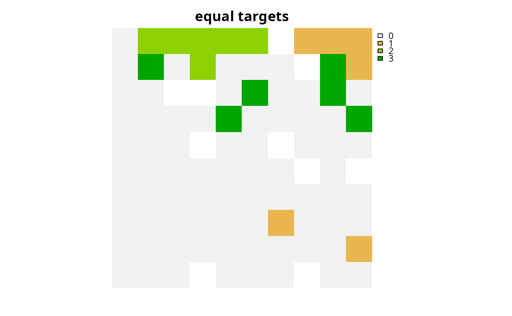
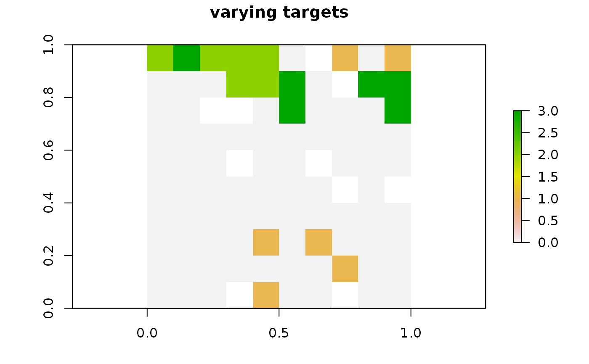

Add targets to a conservation planning problem expressed as the same values as the underlying feature data (ignoring any specified feature units). For example, setting a target of 10 requires that the solution secure a set of planning units for which their summed feature values are equal to or greater than 10.
Usage
add_absolute_targets(x, targets)
# S4 method for class 'ConservationProblem,numeric'
add_absolute_targets(x, targets)
# S4 method for class 'ConservationProblem,matrix'
add_absolute_targets(x, targets)
# S4 method for class 'ConservationProblem,character'
add_absolute_targets(x, targets)Arguments
- x
problem()object.- targets
object that specifies the targets for each feature. See the Targets format section for more information.
Value
An updated problem() object with the targets added to it.
Details
This function is used to set targets for each feature (separately).
For problems associated with a single management zone, this function
may be useful to specify individual targets for each feature.
For problems associated with multiple management zones, this function
can also be used to specify a target for each feature within each zone
(separately). For example, this may be useful in planning exercises
where it is important to ensure that some of the features are adequately
represented by multiple zones. For example, in a marine spatial planning
exercise, it may be important for some features (e.g., commercial
important fish species) to be adequately represented by a conservation zone
for ensuring their long-term persistence, and also by a fishing zone to
for ensure food security. For greater flexibility in target setting
(such as setting targets that can be met through the allocation of
multiple zones), see the add_manual_targets() function.
Targets format
The targets for a problem can be specified using the following formats.
targetsas anumericvectorcontaining target values for each feature. Additionally, for convenience, this format can be a single value to assign the same target to each feature. Note that this format cannot be used to specify targets for problems with multiple zones.
targetsas amatrixobjectcontaining a target for each feature in each zone. Here, each row corresponds to a different feature in argument to
x, each column corresponds to a different zone in argument tox, and each cell contains the target value for a given feature that the solution needs to secure in a given zone.targetsas acharactervectorcontaining the column name(s) in the feature data associated with the argument to
xthat contain targets. This format can only be used when the feature data associated withxis asf::st_sf()ordata.frame. For problems that contain a single zone, the argument totargetsmust contain a single column name. Otherwise, for problems that contain multiple zones, the argument totargetsmust contain a column name for each zone.
Target setting
Many conservation planning problems require targets. Targets are used to specify the minimum amount, or proportion, of a feature's spatial distribution that should ideally be protected. This is important so that the optimization process can weigh the merits and trade-offs between improving the representation of one feature over another feature. Although it can be challenging to set meaningful targets, this is a critical step for ensuring that prioritizations meet the stakeholder objectives that underpin a prioritization exercise (Carwardine et al. 2009). In other words, targets play an important role in ensuring that a priority setting process is properly tuned according to stakeholder requirements. For example, targets provide a mechanism for ensuring that a prioritization secures enough habitat to promote the long-term persistence of each threatened species, culturally important species, or economically important ecosystem service under consideration. Since there is often uncertainty regarding stakeholder objectives (e.g., how much habitat should be protected for a given species) or the influence of particular target on a prioritization (e.g., how would setting a 90% or 100% for a threatened species alter priorities), it is often useful to generate and compare a suite of prioritizations based on different target scenarios.
References
Carwardine J, Klein CJ, Wilson KA, Pressey RL, Possingham HP (2009) Hitting the target and missing the point: target‐based conservation planning in context. Conservation Letters, 2: 4–11.
See also
Other targets:
add_auto_targets(),
add_group_targets(),
add_manual_targets(),
add_relative_targets()
Examples
# \dontrun{
# set seed for reproducibility
set.seed(500)
# load data
sim_pu_raster <- get_sim_pu_raster()
sim_features <- get_sim_features()
sim_zones_pu_raster <- get_sim_zones_pu_raster()
sim_zones_features <- get_sim_zones_features()
# create minimal problem with no targets
p0 <-
problem(sim_pu_raster, sim_features) %>%
add_min_set_objective() %>%
add_binary_decisions() %>%
add_default_solver(verbose = FALSE)
# create problem with targets to secure 3 amounts for each feature
p1 <- p0 %>% add_absolute_targets(3)
# create problem with varying targets for each feature
targets <- c(1, 2, 3, 2, 1)
p2 <- p0 %>% add_absolute_targets(targets)
# solve problem
s1 <- c(solve(p1), solve(p2))
names(s1) <- c("equal targets", "varying targets")
# plot solution
plot(s1, axes = FALSE)

# create a problem with multiple management zones
p3 <-
problem(sim_zones_pu_raster, sim_zones_features) %>%
add_min_set_objective() %>%
add_binary_decisions() %>%
add_default_solver(verbose = FALSE)
# create a problem with targets that specify an equal amount of each feature
# to be represented in each zone
p4_targets <- matrix(
2,
nrow = number_of_features(sim_zones_features),
ncol = number_of_zones(sim_zones_features),
dimnames = list(
feature_names(sim_zones_features), zone_names(sim_zones_features)
)
)
print(p4_targets)
#> zone_1 zone_2 zone_3
#> feature_1 2 2 2
#> feature_2 2 2 2
#> feature_3 2 2 2
#> feature_4 2 2 2
#> feature_5 2 2 2
p4 <- p3 %>% add_absolute_targets(p4_targets)
# solve problem
s4 <- solve(p4)
# plot solution (cell values correspond to zone identifiers)
plot(category_layer(s4), main = "equal targets", axes = FALSE)

# create a problem with targets that require a varying amount of each
# feature to be represented in each zone
p5_targets <- matrix(
rpois(15, 1),
nrow = number_of_features(sim_zones_features),
ncol = number_of_zones(sim_zones_features),
dimnames = list(
feature_names(sim_zones_features),
zone_names(sim_zones_features)
)
)
print(p5_targets)
#> zone_1 zone_2 zone_3
#> feature_1 2 0 0
#> feature_2 1 1 2
#> feature_3 3 3 2
#> feature_4 1 2 0
#> feature_5 2 1 1
p5 <- p3 %>% add_absolute_targets(p5_targets)
# solve problem
s5 <- solve(p5)
# plot solution (cell values correspond to zone identifiers)
plot(category_layer(s5), main = "varying targets", axes = FALSE)

# }